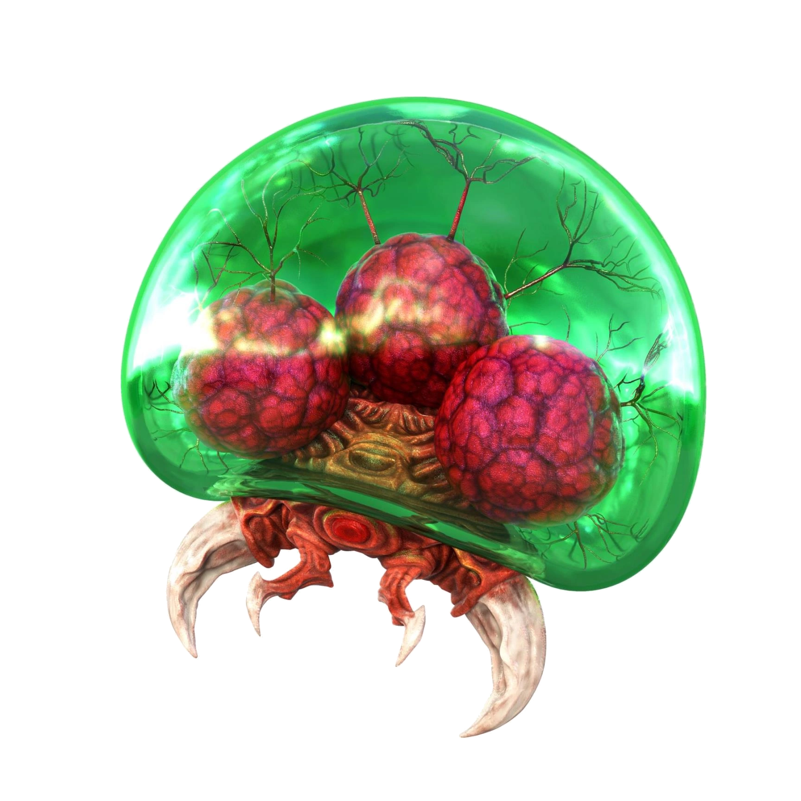

Welcome to "PLACEHOLDER" where you can learn anyting from the abilities of items and where to find them to helpful tricks and sequence breaks!
So what is Super Metroid?
Super Metroid is an action platformer released for the Super Nintendo Entertainment in 1994 and is arguably one of the best games ever made. This game, alonside Castlevania: Symphony of the Night, created the term "Metroidvania".
What is a "Metroidvania"?
A metroidvania is a game where the player is left alone to explore a big map. The player will eventualy find some obstacles and in order to progress, the player needs to find certain upgrades. Nonliniarity defines a metroidvania.
Story
You take control of Samus Aran on one of her many adventures. After exterminating all but one of the metroids on their homeplanet SR388, Samus gives the Galactic Federation the last metroid so it can be used for good. Unfortunatly, the Space Colony Ceres(the place where the baby metroid was kept) gets atacked by Space Pirates and they capture the baby metroid but Samus gives chase. Samus finds herself yet again on planet Zebes where she will find many familiar foes...
Metroids
Originating from the planet SR388, they first became known to the universe at large when Space Pirates stole a batch of specimens from a Galactic Federation research vessel and attempted to exploit them as bioweapons. Since then, the species was spread out on numerous planets, endangering all life present due to the Metroids living off of the mysterious "life energy" of their prey.(thx wiki)
The Chozo
The Chozo were an ancient, mysterious and highly advanced species of sage-like avian sapients that inhabited several planets in the cosmos, including Zebes, Elysia, SR388, Tallon IV, and possibly others. Although the eventual fate of the race as a whole is unknown, countless ruins and technological wonders are littered throughout the many planets they once inhabited.
Samus was raised by the Chozo on planet Zebes after the tragic death of her parents. The Chozo also designed Samus's power suit.
The Bosses
In order to beat Super Metroid you will need to face against 4 main bosses: Kraid, Phantoon, Draygon and Ridly. After defeating those bosses the final area of the game will open: Torion. There you will face against the final boss!